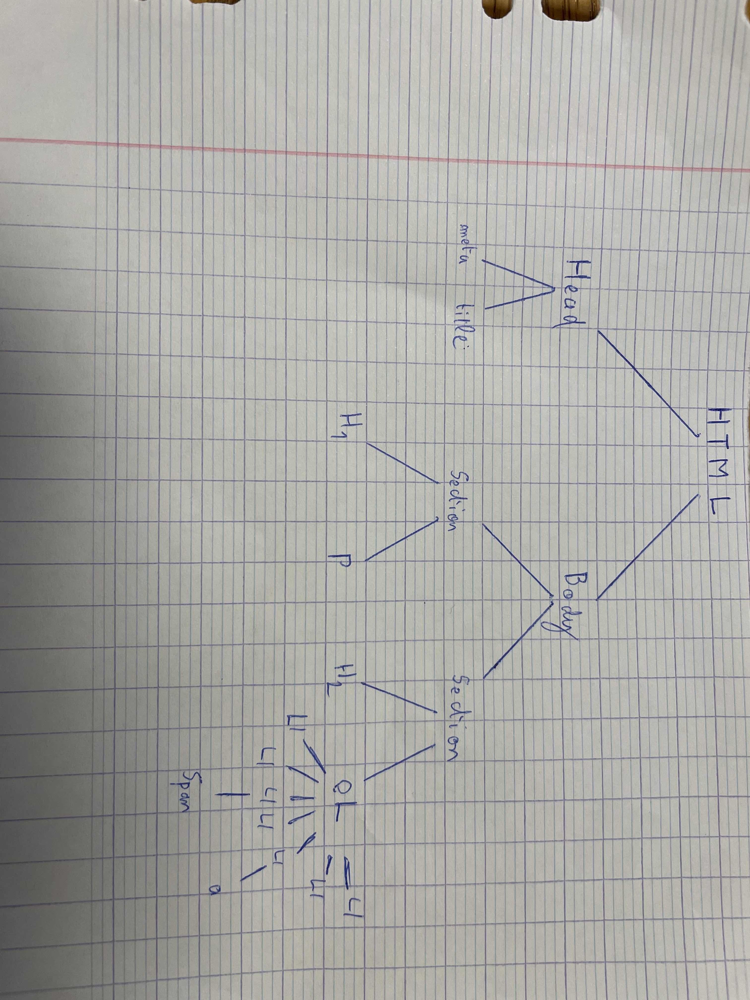

Compte-rendu de TP2
Arnaud de Mesmay
LIV David
Exercice 1 : Document de base, le retour !
- Copier la structure ...
- Les tags HTML commencent par une balise ouvrante <foo> et finissent par une balise fermante </foo>.
- Pour mettre un texte en gras on utilise la balise <b>, pour mettre en italique on utilise la balise <i>
- On utilise les 2 balises en même temps <b><i>text</i></b> va donner text
- On utilise la balise <ol> suivi de la balise <li> à l'intérieur
- On écrit "Compte-rendu de TP 2" en en-tête Pour l'avoir en titre de fenêtre
On l'écrit aussi dans le corps du document pour savoir à l'utilisateur qu'on fait le TP 2
Cours de programmation web
- Mon superbe arbre !

Exercice 2: les listes et les tables
-
- maths
- physique
- français
-
-
| 1 | 2 | 3 | 4 |
|---|
| 1 | 1 | 2 | 3 | 4 |
|---|
| 2 | 2 | 4 | 6 | 8 |
|---|
| 3 | 3 | 6 | 9 | 12 |
|---|
| 4 | 4 | 8 | 12 | 16 |
|---|
- Voir la 3.
-
| 1 | 3 | 4 |
|---|
| 1 | 1 | 1 | 3 | 4 |
|---|
| 1 | 1 | 3 | 4 |
| 3 | 3 | 3 | 9 | 12 |
|---|
| 4 | 4 | 4 | 12 | 16 |
|---|
J'ai utilisé Google et j'ai tapé tout simplement "Faire une case faisant 2 colonnes html", j'ai trouvé colspan, puis j'ai déduis rowspan
Exercice 3: les listes et les tables
- Pour résoudre à cette question, on utilise le CSS et on cible h2{color:orange}
- Pour résoudre à cette question, on utilise le CSS et on cible body{font-family:sans-serif}
- Pour résoudre à cette question, on utilise le CSS et on cible les balises h1, h2 et h3, et on leur attribue la taille qu'on veut
- Pour résoudre à cette question, on utilise le CSS on cible directement la balise h2 <h2 style="color: Orange;">
- Pour résoudre à cette question, on pourrait utiliser text-align:center, mais on peut aussi utiliser display:flex, suivi de justify-content:center et align-items:center
- Pour résoudre à cette question, on fait comme la 5, mais au lieu de mettre center, on utilise right
- Pour résoudre à cette question, on utilise :hover en ciblant les liens, donc a:hover